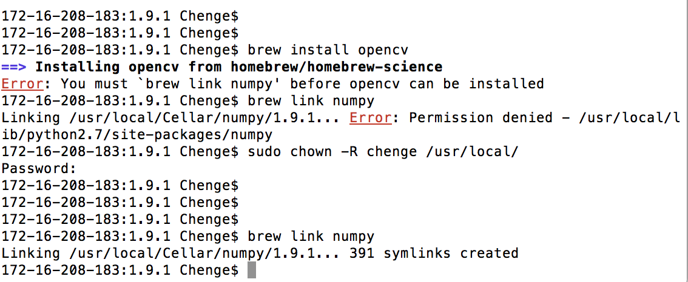
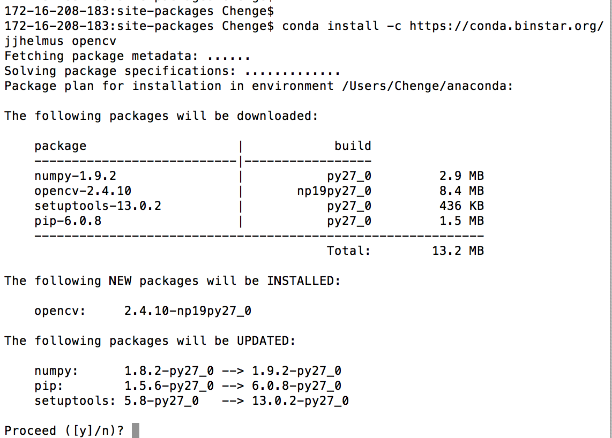

OpenCV is sooo buggy... Everytime I came across opencv, I would spend a hell lot of time setting up the environment. Whether working with python, C++, Xcode.... OK now I finally got a chance to write some tips down, HOPE THIS WOULD HELP! *3*
Mac OS Yosemite 10.10.2 || Xcode 6.1.1 || opencv 2.4.10.1
Opencv can be got from
I have the first 2 versions installed. (I deleted the conda version. But not sure how to completely romove the cmake version.)
homebrew requires linking numpy before installing opencv, but it can't link numpy because of some access error (Permission denied).
sudo chown -R chenge /usr/local

172-16-208-183:1.9.1 Chenge$ brew link numpy
Linking /usr/local/Cellar/numpy/1.9.1... 391 symlinks created
172-16-208-183:1.9.1 Chenge$ brew install opencv
==> Installing opencv from homebrew/homebrew-science
==> Downloading https://downloads.sf.net/project/machomebrew/Bottles/science/ope
######################################################################## 100.0%
==> Pouring opencv-2.4.10.1.yosemite.bottle.tar.gz
Error: The `brew link` step did not complete successfully
The formula built, but is not symlinked into /usr/local
Could not symlink share/OpenCV/OpenCVConfig-version.cmake
Target /usr/local/share/OpenCV/OpenCVConfig-version.cmake
already exists. You may want to remove it:
rm '/usr/local/share/OpenCV/OpenCVConfig-version.cmake'
To force the link and overwrite all conflicting files:
brew link --overwrite opencv
To list all files that would be deleted:
brew link --overwrite --dry-run opencv
Possible conflicting files are:
//。。。。a lot of files here//
==> Summary
🍺 /usr/local/Cellar/opencv/2.4.10.1: 219 files, 39M
172-16-208-183:1.9.1 Chenge$ rm /usr/local/share/OpenCV/OpenCVConfig-version.cmake
172-16-208-183:1.9.1 Chenge$ brew link --overwrite opencv
Linking /usr/local/Cellar/opencv/2.4.10.1... 93 symlinks created
172-16-208-183:1.9.1 Chenge$ brew link --overwrite --dry-run opencv
Warning: Already linked: /usr/local/Cellar/opencv/2.4.10.1
To relink: brew unlink opencv && brew link opencv
172-16-208-183:1.9.1 Chenge$
There are some comflicting files because I already had the cmake version opencv installed. But I decided not to delete that and keep both.
conda install -c https://conda.binstar.org/jjhelmus opencv

Anaconda Python works fine with the conda version opencv.But I uninstalled Anaconda opencv: conda uninstall opencv , because I chose to link anaconda python with the brewed opencv instead:
ln -s /usr/local/Cellar/opencv/2.4.10.1/lib/python2.7/site-packages/cv2.so cv2.so
BTW, anoconda python path:
/Users/Chenge/anaconda/lib/python2.7/site-packages/
there are packages like: /Users/Chenge/anaconda/lib/python2.7/site-packages/numpy )
Last but not least, you should add whatever dylib files you need to the project by Add Files to...
BTW, cmake version of opencv is at:
/usr/local/opt/opencv/include/opencv
/usr/local/opt/opencv/include/opencv2
/usr/local/opt/opencv/lib
If you don't know which version you should use, you can add them both...but this is not a neat idea.
This might be helpful: https://syncknowledge.wordpress.com/2014/11/02/using-opencv-2-4-9-with-xcode-6-1-on-os-x-yosemite/